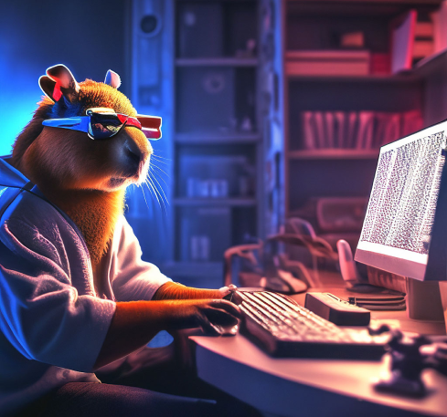

Хто такий Web-розробник?
Веб-розробник – це фахівець, який створює та підтримує веб-сайти та веб-додатки.Веб-розробники можуть спеціалізуватися на різних аспектах веб-розробки, таких як front-end, back-end або full-stack розробка. Веб-розробка – це динамічна та постійно зростаюча сфера, яка пропонує багато можливостей для кар'єрного росту.
Gemini
основними завданнями Web-розробникa є:
- Проектування та втілення візуального дизайну та інтерфейсу веб-сайтів.
- Написання коду для створення функціональності веб-сайтів.
- Тестування та налагодження веб-сайтів для забезпечення їх коректної роботи.
- Підтримка та оновлення веб-сайтів після їх запуску.

Історія розвитку web
1989: Тім Бернерс-Лі, працюючи в Європейській організації ядерних досліджень (CERN), публікує документ, що описує концепцію Всесвітньої павутини (World Wide Web).
1990: Створено перший веб-браузер WorldWideWeb, також розроблений Бернерсом-Лі.
1998: З'являється Google, яка швидко стає найпопулярнішою пошуковою системою у світі.
2004: З'являється Facebook, яка стає найпопулярнішою соціальною мережею у світі.
2005: Запущено YouTube, платформу для обміну відео.
2010: З'являються Instagram та Pinterest, візуально орієнтовані соціальні мережі.
Основні напрямки web
Front-end розробка:
HTML, CSS, JavaScript: Основні технології для створення інтерфейсів користувача. Фреймворки та бібліотеки: React, Angular, Vue.js використовуються для створення складних, інтерактивних користувацьких інтерфейсів.
Back-end розробка:
Мови програмування: Python, Java, PHP, Ruby, Node.js для розробки серверної логіки. Бази даних: MySQL, PostgreSQL, MongoDB для зберігання та управління даними.
Full-stack розробка:
Комбінування фронт-енд і бек-енд навичок: Розробники, які володіють як фронт-енд, так і бек-енд технологіями, забезпечують комплексний підхід до створення веб-додатків.
Мобільна веб-розробка:
PWA (Progressive Web Apps): Створення веб-додатків, які виглядають та працюють як нативні мобільні додатки. Респонсивний дизайн: Забезпечення належного відображення та функціональності веб-сторінок на мобільних пристроях.